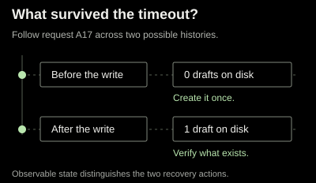

AI engineering field guide
A support worker times out after it writes a draft. On its next run, should it write another? Build a workflow that can answer from the record it left behind.

Get one result on your machine
Extract the complete archive. Open index.html directly. To run the labs, open a terminal in the same folder and use Python 3.10 or later. The recorded runs use Python 3.14.7.
python3 -B labs/replay.py lab-outputUse a fresh output directory for each replay. Read the lab records beside your output. The report and queue let you inspect what the program produced. The replay also checks an intentionally failing baseline.
What do you need to do?
Check your starting point
A model says it fixed an issue. It shows a green test report from yesterday. What evidence would let you accept the change today?
Compare your answer
Ask for the original failing input, the same test on the changed revision, and a check for a neighboring case. Ask what the test can miss. If you already do this, start with the benchmark. If the revision or the check feels unclear, start with foundations.
Predict the next action
A tool reports a timeout. Choose when the connection failed, then inspect what the worker can learn from storage.